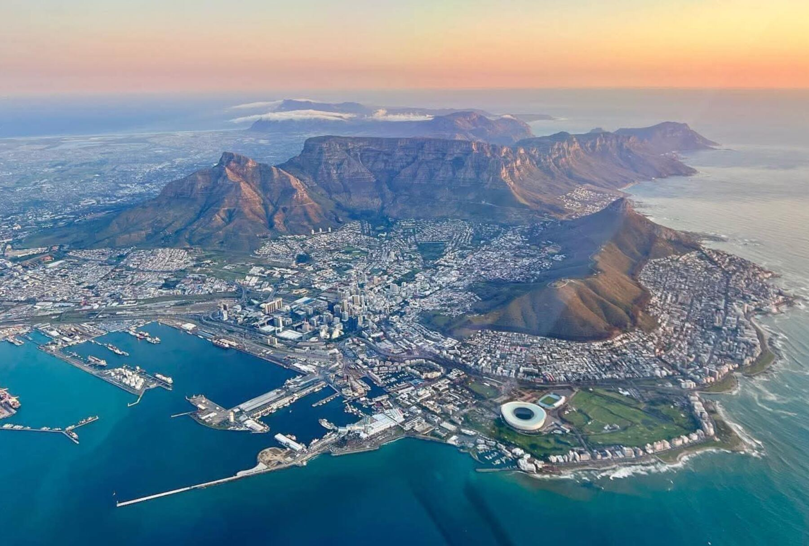
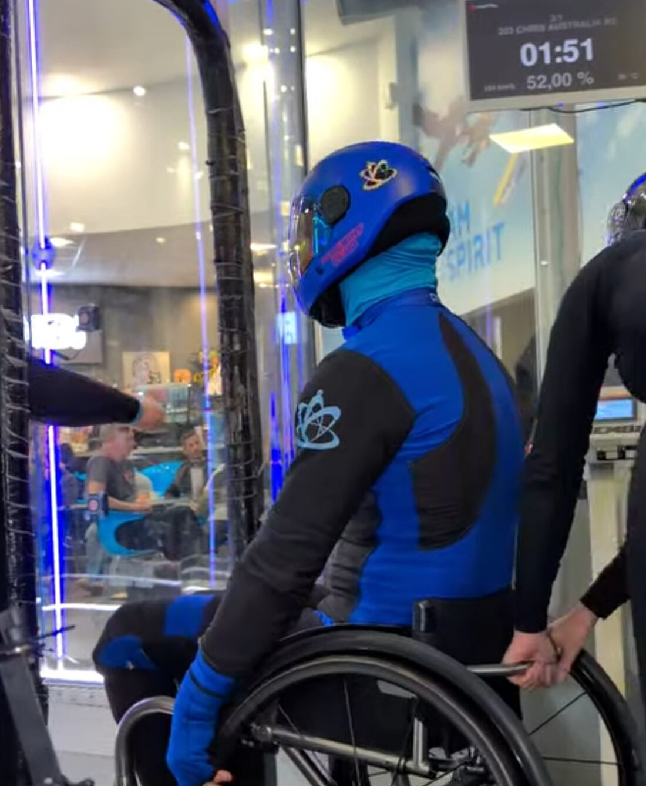
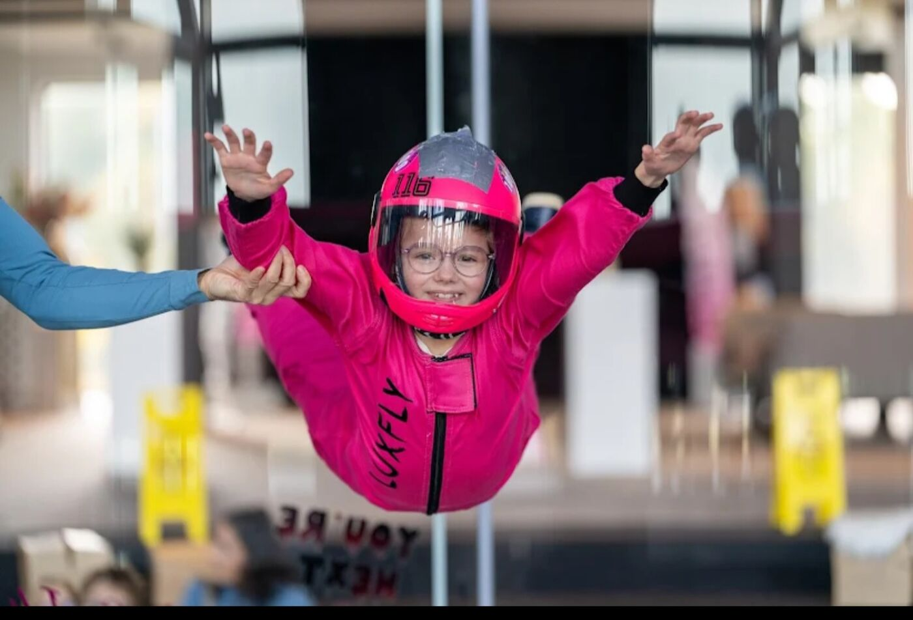
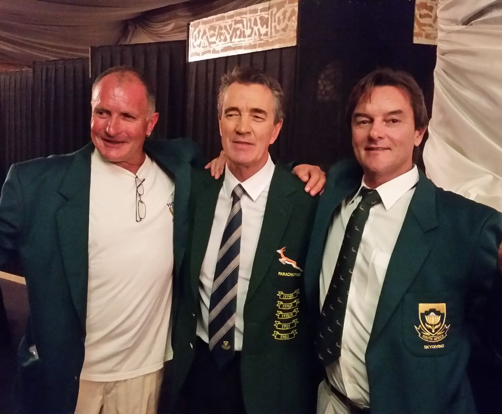

Investment proposal
The Cape Town Vertical Wind Tunnel
- Audience
- Investors and funding partners
- Focus
- TT65 PRO facility, V&A Waterfront, funding structure and revenue model
- The ask
- R100m, the remaining 50% of the R200m development cost

V&A WaterfrontCape TownProposed development
A 6.5-metre TT65 PRO flight chamber at the V&A Waterfront: a world-class indoor skydiving destination, a school of human flight for people with disabilities, and a platform for youth development. Half of the R200 million development cost is already secured.
One tunnel, three proposals
Each proposal stands on its own. Together they form a single vision led by Ruben Knoetze, National and International Springbok Skydiving Champion. A partner can engage with one, or with the initiative as a whole.
Investment proposal

Sponsorship proposal

Social development proposal
The facility
Tunnel Tech's TT65 PRO is built to FAI competition standard and supports the full range of indoor skydiving disciplines, from first flights to 4-way and 8-way Formation Skydiving and Dynamic events.
| Flight chamber diameter | 6.5 m |
|---|---|
| Flight chamber height | ≈ 24 m |
| Spectator glass | 2 levels, 54 mm |
| Noise emissions | 55 dB(A) |
| Standard | FAI competition-grade |
| Manufacturer | Tunnel Tech |
Why now
Indoor skydiving is an industry exceeding €1 billion a year, with more than 300 facilities worldwide and over 20 million flights recorded. In 2025 the FAI recognised Indoor Para Skydiving as its first para-sports discipline. A World Cup debuted in April 2026 and the first World Championships follow in March 2027.

Development timeline

Leadership
National and International Springbok Skydiving Champion with more than 50 years in the sport, including leadership within South African Skydiving, national and international competition, World Championship-level participation and advanced free-fall instruction.
The School of Human Flight intends to work with the Aero Club of South Africa, the FAI-recognised National Air Sport Control, alongside paraplegic associations and disability sporting organisations, with programmes developed by European-qualified professionals.
Questions
A proposed indoor skydiving and human flight facility at the V&A Waterfront in Cape Town, South Africa, built around a Tunnel Tech TT65 PRO vertical wind tunnel with a 6.5-metre diameter, 24-metre high flight chamber. It will be the first facility of this scale on the African continent.
A vertical wind tunnel produces a controlled column of air that lets a person fly indoors, under professional supervision, without jumping from an aircraft. An introductory flight recreates the sensation of free-fall at wind speeds above 280 km/h.
The total development cost is R200 million. R100 million (50%) has been secured. The project is seeking the remaining R100 million from investment partners. A detailed use-of-funds breakdown and financial model is shared with prospective investors during due diligence.
Within the V&A Waterfront precinct in Cape Town. The specific venue within the precinct is still to be finalised.
Indoor skydiving for athletes with disabilities. The Fédération Aéronautique Internationale (FAI) adopted it in 2025 as its first para-sports discipline. A World Cup debuted in France in April 2026 and the inaugural FAI World Championships follow in March 2027. The Cape Town School of Human Flight aims to prepare South African para-athletes for these events.
Ruben Knoetze, a National and International Springbok Skydiving Champion with more than 50 years in the sport, including national and international competition, World Championship-level participation and advanced free-fall instruction.
After site and funding finalisation: about 3 months of engineering and final design, 8 to 10 months of construction and fit-out, 2 months of testing and commissioning, and a 1-month soft launch before public opening.
Three separate proposals are available: an investment and partnership proposal for the facility, a sponsorship proposal for the Cape Town School of Human Flight, and a social development proposal for youth and community programmes. Each can be taken up on its own or as a whole. Detailed discussions proceed under a Non-Circumvention and Non-Disclosure Agreement.
Investors, sponsors and partners
The three proposal documents, a detailed use-of-funds breakdown and the financial model are shared with prospective investors and sponsors as part of due diligence. A Non-Circumvention and Non-Disclosure Agreement can be executed prior to detailed discussions.
Email
invest@capetownwindfactory.com
Partnership opportunities